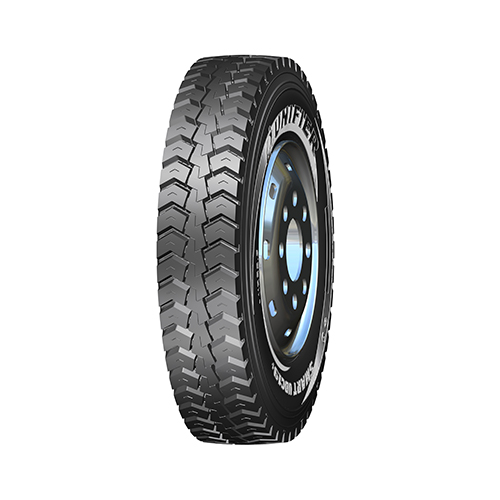
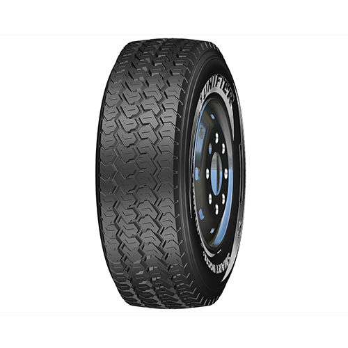
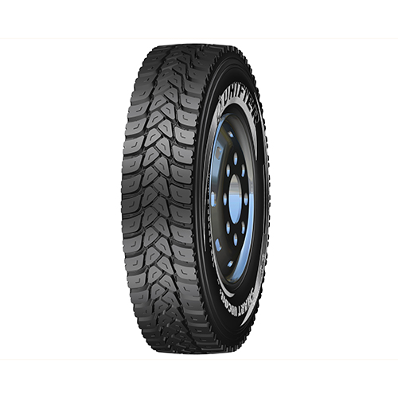
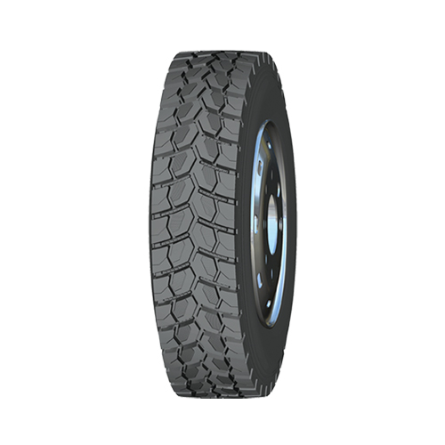
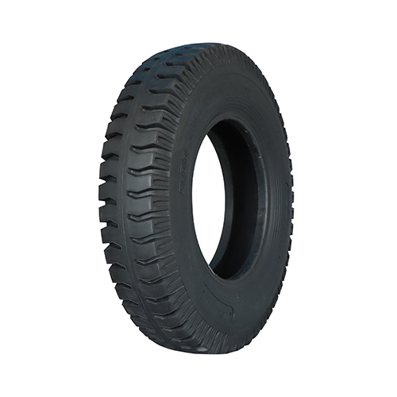
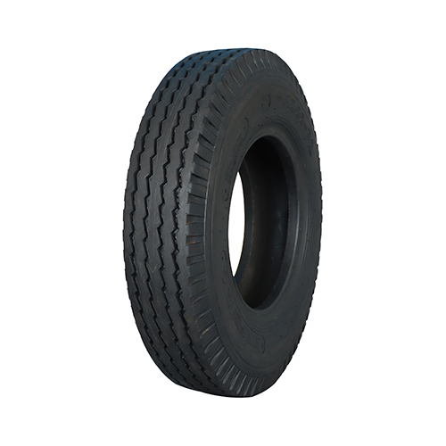
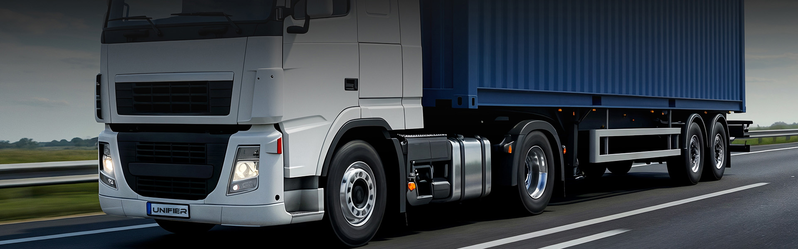
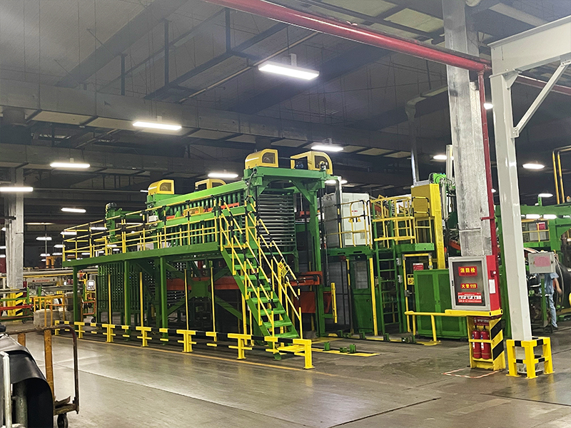
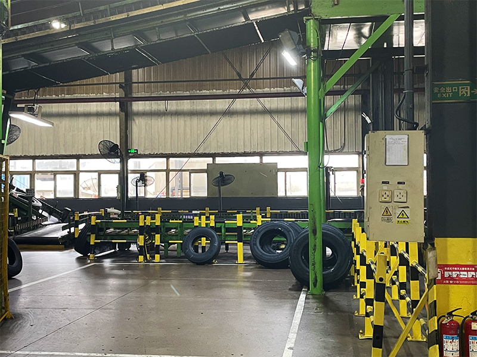

За маршрутомДАЛЕКІ РЕЙСИ
100 ШИН спеціалізується на вантажних шинах і дисках. Оберіть напрям підбору або надішліть параметри автопарку для комплексної пропозиції.
Нові, відновлені та б/в вантажні шини, диски й обладнання для шиномонтажу.
Вкажіть кермову, ведучу або причіпну вісь. Далі звірте типорозмір, умови маршруту, індекси навантаження й швидкості.
У каталозі 100 ШИН представлені вантажні шини багатьох виробників. Концепт групує вхід у каталог за реальною задачею покупця, а далі уточнює розмір, виробника, індекси й наявність.

За маршрутомДАЛЕКІ РЕЙСИ

За маршрутомЩОДЕННІ РЕЙСИ

За умовамиДОРОГА / БЕЗДОРІЖЖЯ

За віссюКЕРОВАНІСТЬ

За віссюТЯГА

За віссюРЕСУРС
Для вантажної шини недостатньо лише типорозміру. Важливі вісь, навантаження, швидкість, покриття та очікуваний ресурс.
Менеджер уточнює типорозмір, вісь, індекси навантаження та швидкості.
Маршрут, покриття, сезонність і характер навантаження звужують вибір до релевантних моделей.
Асортимент від преміального до бюджетного сегмента допомагає зіставити закупівельну ціну з очікуваною роботою шини.
Фінальне рішення приймається після звірки характеристик конкретної моделі та умов експлуатації.
Компанія працює з вантажними шинами й дисками з 2005 року. Окрім продажу, мережа розвиває шинні центри, відновлення вантажних шин, закупівлю каркасів і підбір обладнання для шиномонтажних ділянок.
Перейти на чинний сайт 100 ШИН


Надішліть типорозміри, кількість автомобілів і план закупівлі. Менеджер звірить моделі з вашими осями та маршрутами й підготує одну пропозицію на весь парк.
На сайті компанії представлені шинні центри в багатьох містах України, каталоги нових, відновлених і б/в вантажних шин, дисків та обладнання. Для закупівлі автопарку можна одразу перейти до персонального підбору.
Надішліть дані один раз. Менеджер перевірить моделі, кількість і наявність та повернеться з пропозицією.